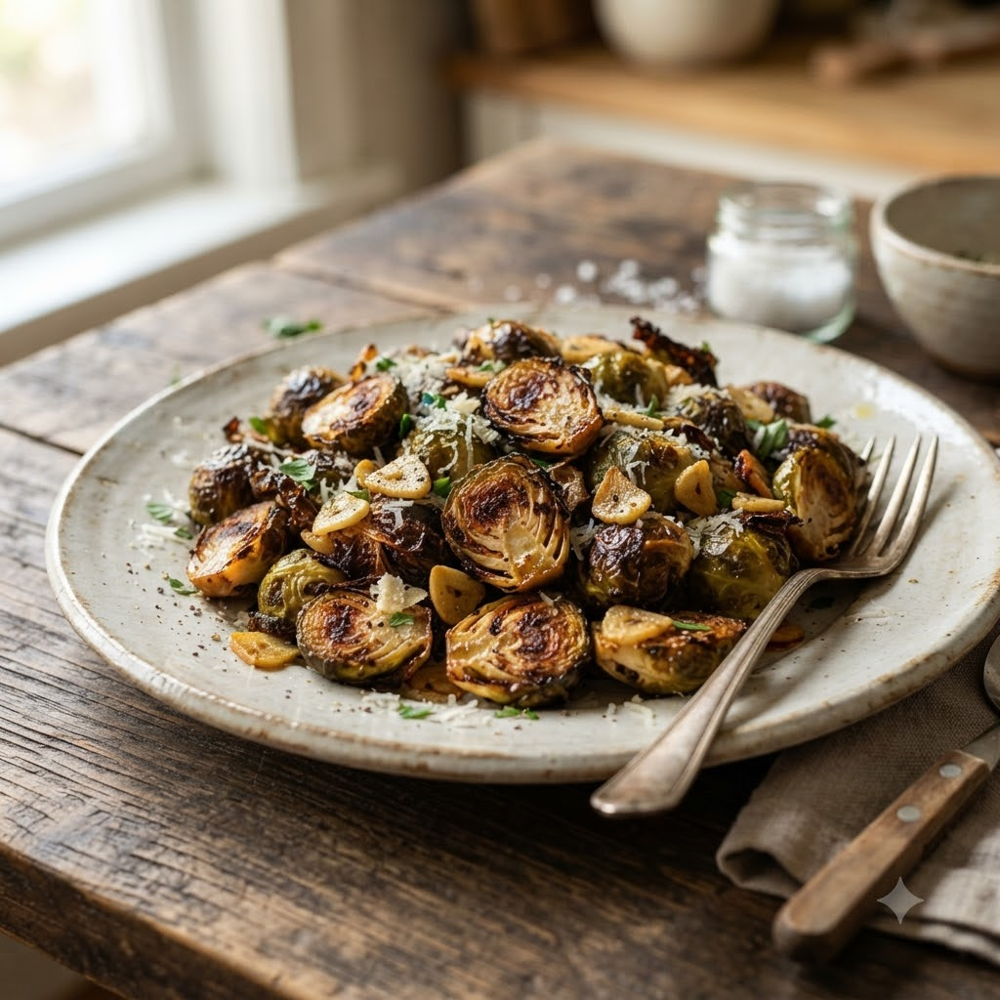

Garlic Parmesan Brussels Sprouts

Garlic Parmesan Brussels Sprouts
Airfryer – Roast 190°C 14 min — Serves 4
Ingredients
- 400g Brussels sprouts, halved
- 1 tbsp oil
- 2 cloves garlic (lehsun), minced
- 2 tbsp grated Parmesan (or any hard cheese)
- Salt & pepper to taste
Method
1Preheat: Preheat the Airfryer to 190°C for 4 minutes before adding the food to the basket.
2Toss halved sprouts with oil, garlic, salt and pepper.
3Arrange cut-side down in the basket.
4Roast at 190°C for 14 minutes, shaking halfway, until edges are crisp and charred.
5Toss with Parmesan while hot and serve immediately.